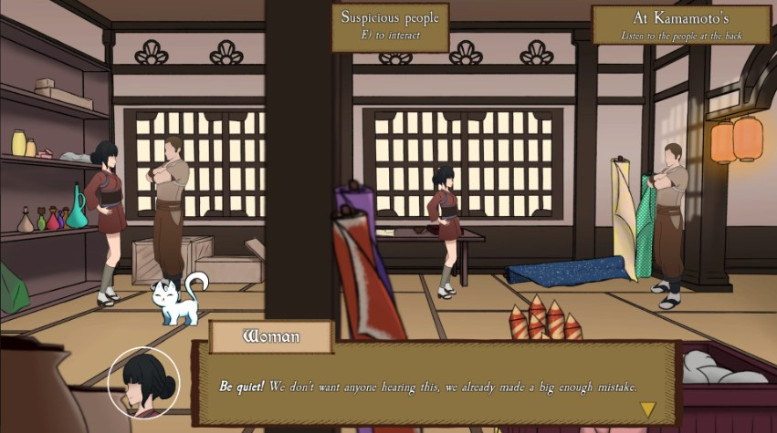
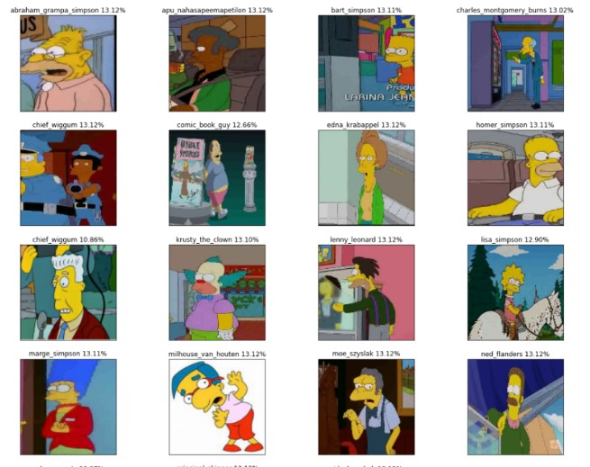
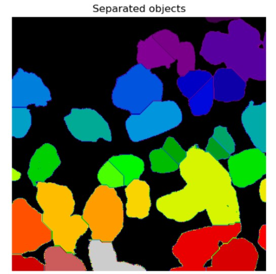
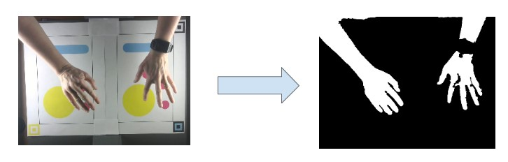
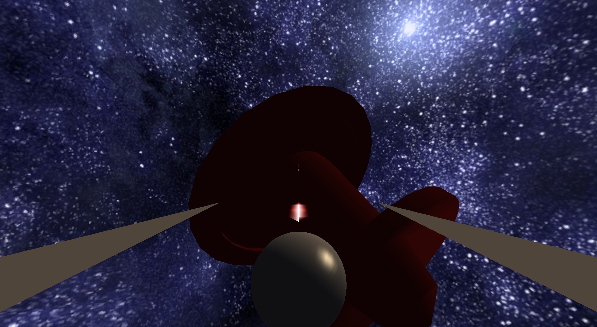
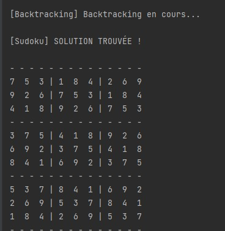
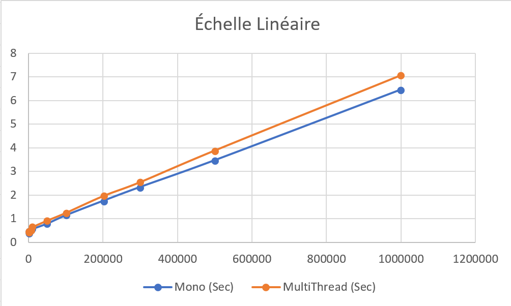
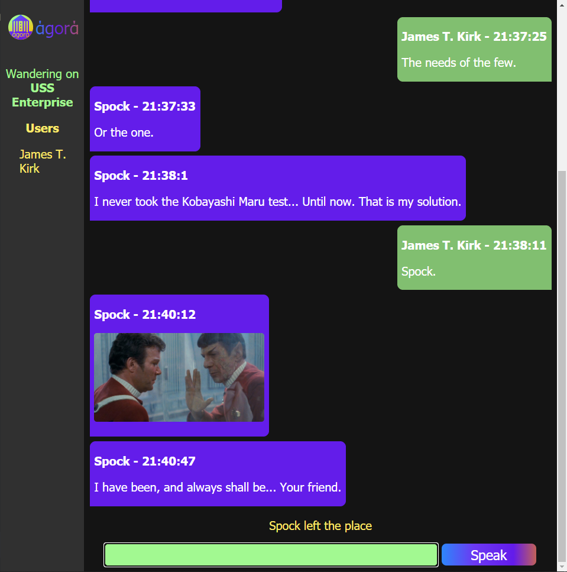

Jeux vidéos
Qat Game
Qat Game est le projet que j'ai apprécié faire. C'est un jeu narratif 2D fait avec Unity. En voici un aperçu.


Prototype de jeu 3D futuriste d'infiltration. Unity3D.
Été 2021
Le plus long trajet

Realisé en C++ OpenCV OpenGL, l'objectif est de controller une voiture virtuelle et de rester le plus longtemps dessus.
Hiver 2022
Génération d'images avec un GAN

Entrainement d'un GAN sur un dataset d'images de faces d'animés pour en générer de nouvelles. Python, tensorflow
Hiver 2022
Catégorisation grâce aux réseaux de neurones

Utilisation de transfert Learning ainsi que création d'un réseau de neurones from scratch pour catégoriser des images d'un dataset de "The Simpsons". Python, Tensorflow, keras.
Hiver 2022
Estimer le taux de rangement d'une piece

Utilisation des opérateurs morphologiques pour estimer les différences entre les images. Python, OpenCV
Hiver 2022
Reconnaissance faciale et blockchain

Reconnaitre le visage d'une personne dans un flux vidéo et l'avertir par e-mail. Stocker sa réponse dans une blockchan. python,OpenCv,face-recognition,Web, SQL
Hiver 2022
Segmentation de roches

Segmenter des roches pour recupérer leurs caractéristiques. Plusieurs techniques ont été testées, ici le watershed. Python, OpenCV
Hiver 2021
Astra Pioneers


Projet non terminé consistant à piloter un vaisseau spatial à l'aide de ses mains. Les commandes sont les formes que l'on voit en fond, la position des mains ainsi que leur état (ouvertes, fermées) déclenchent des commandes pour le vaisseau.
Automne 2020
Color your mood

Projet Télécom Saint Etienne x Biennale du Design. L'utilisateur interagit avec une caméra et le programme dessine à l'écran une représentation de son état.
Hiver 2022
Trois mini projets en Intelligence artificielle

Codage d'un agent robot aspirateur. Il doit aspirer des poussières, récupérer des diamants. L'environnement est mis a jour aleatoirement. La première partie le robot explore de manière non informée puis construit son environnement. Il utilise ensuite A* pour déterminer les meilleurs chemins.

Resolution automatique de Sudoku

Secourrir une personne dans une maison en feu. Il y a des foyers qui emettent de la chaleur, des decombres qui emettent de la poussiere et une personne qui emet des cris.
Été 2021
Recréer des chaines de contamination

Fait pour le cours de programmation haute performance, la solution permet de traiter des données présentes dans un fichier CSV de 1 millions d'entrées en environ 7 secondes. Méthode de complexité linéaire à priori. Java
Hiver 2021
Application de chat Web

Fait en HTML, CSS, JS avec websocket. On peut se connecter avec des salons différents, un message d'entée et un message de sortie quand on accède/sort du salon.